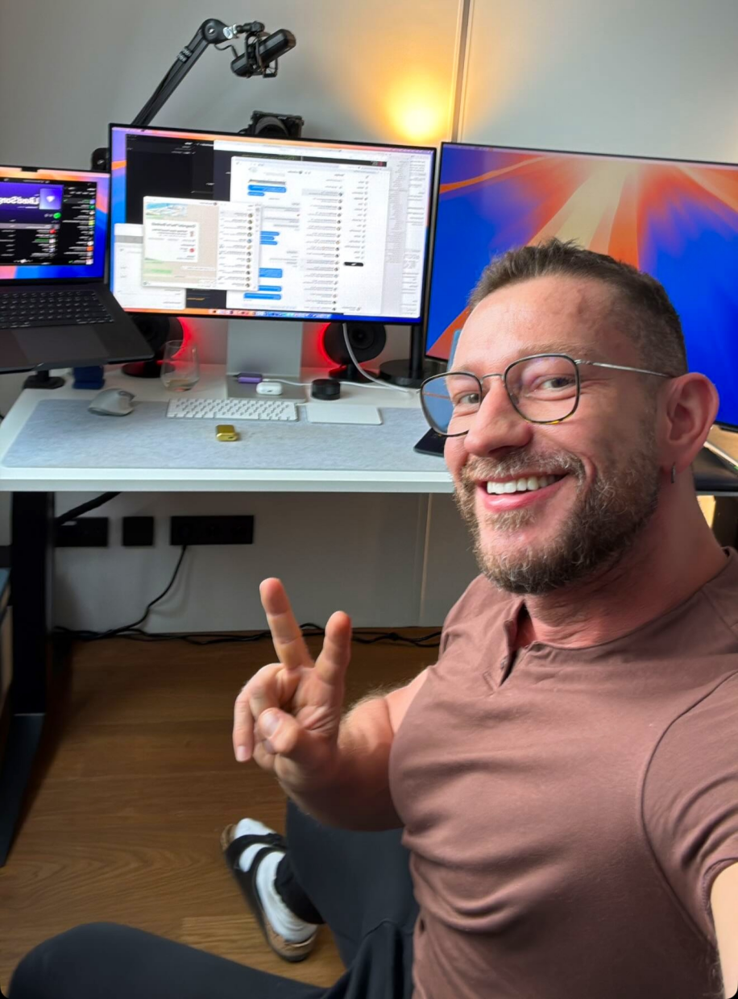

常用传统的 chatbot
像豆包、Qwen、kimi、智谱、minimax。问一句答一句，最多有一个 web_fetch 能力，就是你的问题带着 url，会把 url 内容抓下来回答，有时候风控可能会抓不下来。

一句话解释：随时安排任务的，一个住在你电脑上的，真正做事的个人助手
Openclaw之父：彼得·斯坦伯格（Peter Steinberger），一位奥地利个人开发者
又一次在摩洛哥旅行的时候，发了一个给 AI 发了一个音频文件，并没有告诉 AI 干什么，然后 AI 把音频文件转录成文本发给他。他觉得不可思议，然后问 AI 做了什么，AI 告诉他：它检查了一下文件格式，发现是是opus音频格式，电脑上找到了ffmpeg工具进行转换，然后发现没有安装Whisper，看到环境变量里面有 openai 的密钥，然后调用API进行了转录。
 WhatsApp 发送音频
WhatsApp 发送音频
 Claude 自动处理并转录
Claude 自动处理并转录
